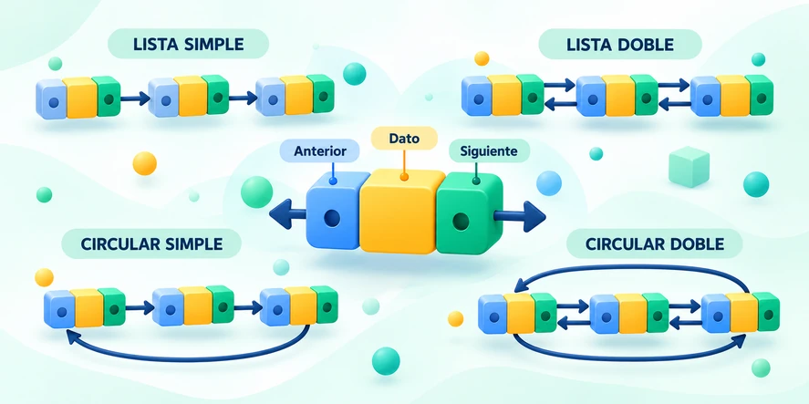
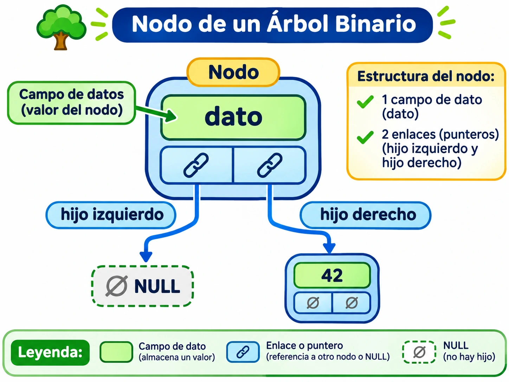
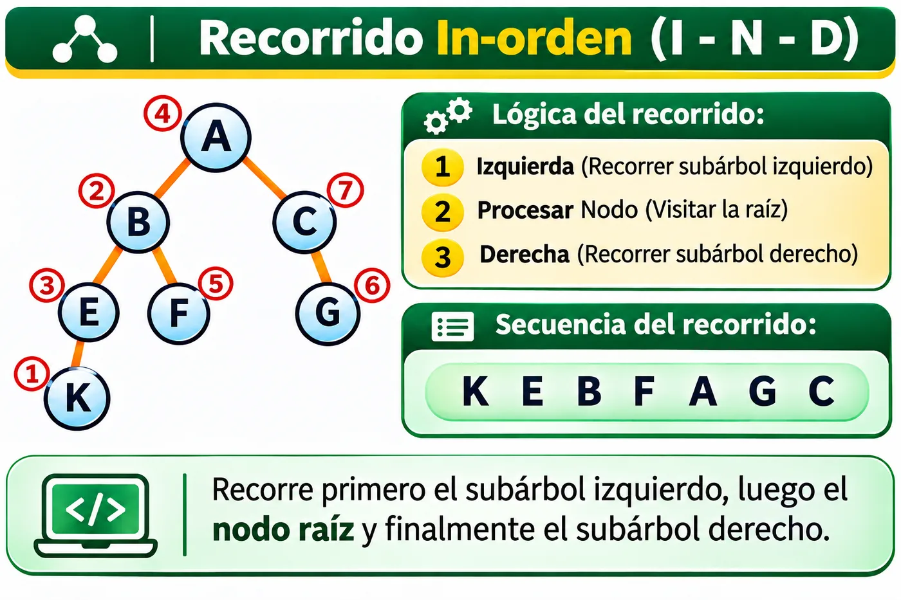
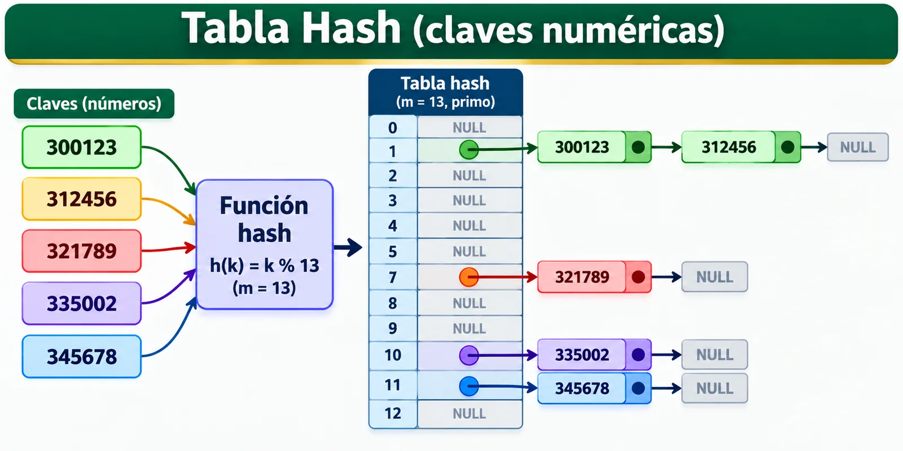
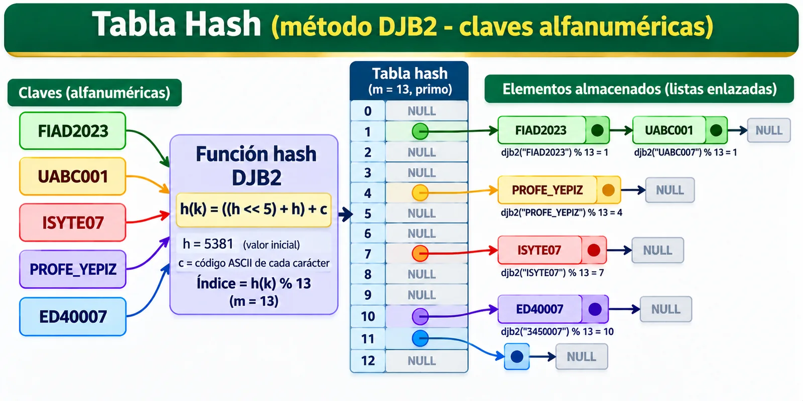
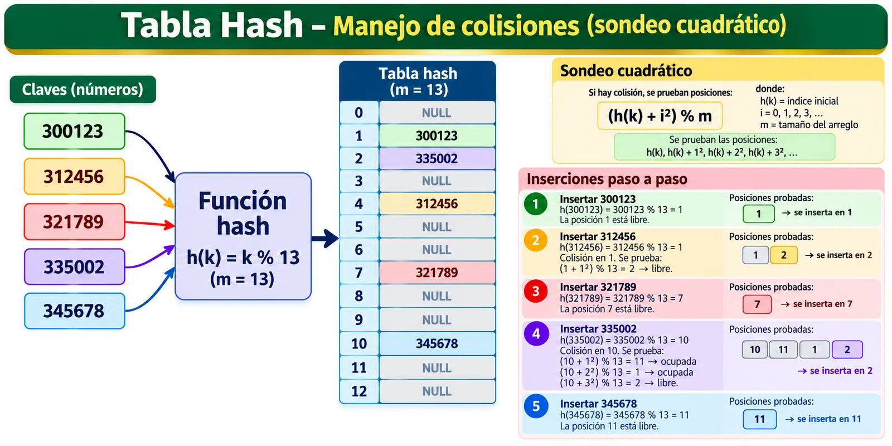

1 · ¿Qué es una estructura de datos?
Una estructura de datos es una forma organizada de almacenar y relacionar información para que un programa pueda consultarla, recorrerla, insertarla, modificarla y eliminarla de manera controlada y eficiente.
Organización
Define cómo se acomodan los datos y qué relaciones existen entre ellos.
Operaciones
Determina cómo buscar, insertar, eliminar, recorrer y actualizar información.
Eficiencia
Una buena elección puede reducir tiempo de ejecución y uso innecesario de memoria.
Abstracción
Permite trabajar con operaciones y comportamiento sin depender de todos los detalles internos.
2 · Importancia en las Ciencias Computacionales
Las estructuras de datos son fundamentales porque conectan tres áreas esenciales: algoritmos, memoria y diseño de software. La misma información puede resolverse de formas muy distintas dependiendo de cómo se organice.
¿Por qué son importantes?
- Permiten diseñar algoritmos más rápidos y escalables.
- Reducen recorridos y búsquedas innecesarias.
- Ayudan a administrar memoria y recursos del sistema.
- Representan relaciones lineales, jerárquicas y asociativas.
- Son base de sistemas operativos, compiladores, bases de datos, redes y aplicaciones.
Elegir la estructura adecuada
No existe una estructura “mejor” para todos los problemas. La elección depende de qué operación será más frecuente:
- Acceso directo: arreglos.
- Inserción/eliminación flexible: listas.
- Último en entrar, primero en salir: pilas.
- Primero en entrar, primero en salir: colas.
- Búsqueda ordenada: árboles.
- Prioridad: montículos.
- Acceso por clave: tablas Hash.
3 · Clasificación de las estructuras de datos
3.1 · Según la forma de reservar memoria
📦 Estructuras estáticas
Su tamaño se define previamente y normalmente permanece fijo durante la ejecución.
Ejemplo: un arreglo de 100 enteros reserva espacio para esos 100 elementos desde su creación.
🔗 Estructuras dinámicas
Pueden crecer o disminuir durante la ejecución mediante nodos y referencias.
Ejemplos: listas enlazadas, árboles y muchas implementaciones de pilas y colas.
3.2 · Según la relación entre los datos
Lineales
Los elementos siguen una secuencia. Ejemplos: listas, pilas y colas.
Jerárquicas
Los elementos forman niveles y relaciones padre-hijo. Ejemplos: ABB, AVL y montículos.
Asociativas / por clave
Una función transforma una clave en una posición de almacenamiento. Ejemplo: tablas Hash.
4 · Panorama visual del curso
Estas imágenes permiten reconocer rápidamente cómo cambia la organización de los datos entre estructuras lineales, jerárquicas y asociativas.






5 · Matriz de estructuras que estudiaremos
| Estructura | Organización | Memoria habitual | Principio / propiedad | Ventaja principal | Tema |
|---|---|---|---|---|---|
| Arreglo / vector | Lineal | Estática o contigua | Índice | Acceso directo | Base del curso |
| Lista enlazada | Lineal | Dinámica | Nodos + enlaces | Inserción y eliminación flexible | Tema 1 |
| Pila | Lineal | Estática o dinámica | LIFO | PUSH / POP en un extremo | Tema 2 |
| Cola | Lineal | Estática o dinámica | FIFO | Procesamiento por orden de llegada | Tema 3 |
| ABB | Jerárquica | Dinámica | Izq < nodo < der | Búsqueda ordenada | Tema 4 |
| AVL | Jerárquica | Dinámica | ABB auto-balanceado | Mantiene altura logarítmica | Tema 4 |
| Montículo / Heap | Jerárquica | Comúnmente arreglo | Propiedad de prioridad | Acceso rápido al mínimo o máximo | Tema 5 |
| Tabla Hash | Asociativa | Tabla + estrategia de colisión | Clave → Hash → índice | Acceso promedio muy rápido | Tema 6 |
6 · Comparación general de eficiencia
La notación O( ) permite comparar cómo crece el costo de una operación cuando aumenta la cantidad de datos. Los valores siguientes representan comportamientos típicos.
| Estructura | Acceso / consulta | Búsqueda | Inserción | Eliminación | Comentario |
|---|---|---|---|---|---|
| Arreglo | O(1) | O(n) | O(n) | O(n) | Acceso por índice muy rápido; insertar puede requerir desplazamientos. |
| Lista enlazada | O(n) | O(n) | O(1)* | O(1)* | *Si ya se conoce el nodo o la posición de enlace. |
| Pila | O(1) en TOPE | O(n) | O(1) | O(1) | PUSH y POP trabajan en un único extremo. |
| Cola | O(1) en frente | O(n) | O(1) | O(1) | ENQUEUE y DEQUEUE son constantes con implementación adecuada. |
| ABB | — | O(log n) prom. O(n) peor |
O(log n) prom. O(n) peor |
O(log n) prom. O(n) peor |
Puede degenerarse si pierde equilibrio. |
| AVL | — | O(log n) | O(log n) | O(log n) | Mantiene el equilibrio mediante rotaciones. |
| Montículo | O(1) raíz | O(n) | O(log n) | O(log n) raíz | Especializado en prioridad, no en búsqueda arbitraria. |
| Tabla Hash | — | O(1) prom. O(n) peor |
O(1) prom. O(n) peor |
O(1) prom. O(n) peor |
Depende de una buena función Hash y del manejo de colisiones. |

7 · ¿Dónde se utilizan?
🖥️ Sistemas operativos
Procesos, memoria, colas de planificación, archivos y administración de recursos.
🗄️ Bases de datos
Índices, árboles de búsqueda, tablas Hash y estructuras para recuperar registros rápidamente.
🧱 Compiladores
Árboles sintácticos, pilas, tablas de símbolos y procesamiento de expresiones.
🌐 Redes y servicios
Colas de paquetes, cachés, tablas de búsqueda y estructuras de prioridad.
El objetivo del curso no es memorizar estructuras aisladas, sino aprender a elegir la estructura adecuada según el problema, las operaciones necesarias y el costo esperado en tiempo y memoria.